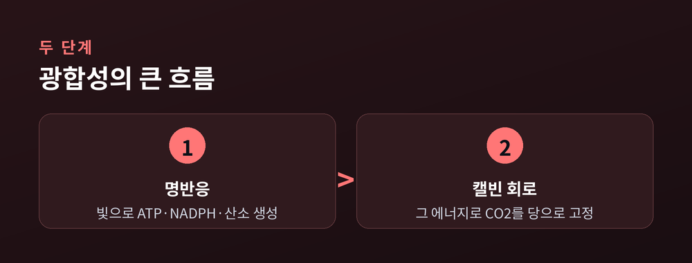
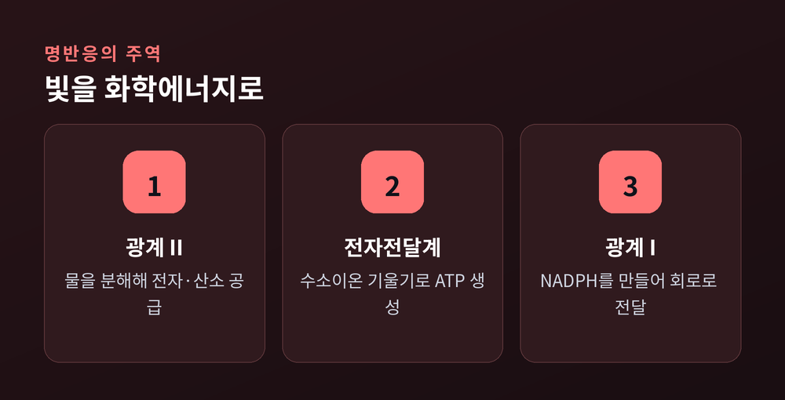
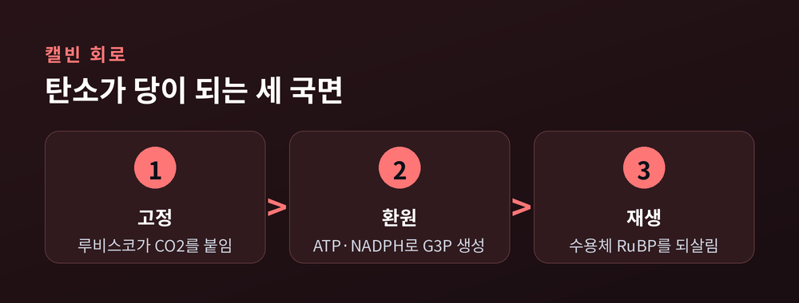
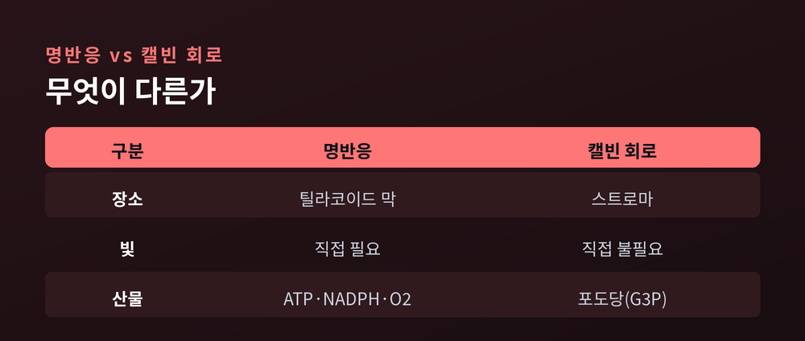
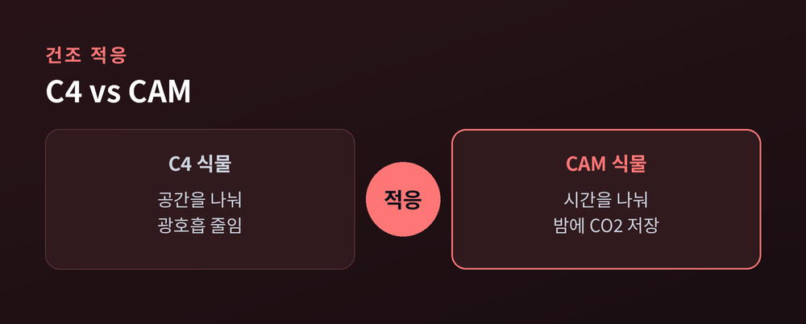

광합성의 원리 — 식물은 어떻게 빛과 이산화탄소로 양분을 만드나

이번 글에서는 광합성의 원리를 정리해 보겠습니다.
식물이 빛과 이산화탄소만으로 어떻게 양분을 만드는지, 그 안에서 벌어지는 두 단계를 차례로 살펴봅니다.
용어가 조금 낯설 수 있지만, 큰 그림부터 잡으면 어렵지 않습니다.
한 줄의 반응식에서 시작합니다
광합성은 결국 이 한 줄로 요약됩니다.
6CO₂ + 12H₂O + 빛에너지 → C₆H₁₂O₆ + 6O₂ + 6H₂O
이산화탄소와 물을 빛으로 엮어 포도당을 만들고, 산소를 내보냅니다.
간단히는 `6CO₂ + 6H₂O + 빛 → 포도당 + 6O₂`로도 씁니다.
여기서 한 가지 짚어 둘 것이 있습니다.
이때 나오는 산소는 이산화탄소가 아니라 물에서 나옵니다.
물을 쪼개는 과정에서 산소가 떨어져 나오는 것입니다.
이 큰 반응은 성격이 다른 두 단계로 나뉩니다.
빛을 직접 쓰는 명반응, 그리고 빛을 직접 쓰지 않는 캘빈 회로입니다.

무대는 엽록체입니다
두 단계는 모두 잎세포 속 엽록체에서 일어납니다.
엽록체는 두 겹의 막으로 싸여 있고, 안에는 두 개의 무대가 있습니다.
하나는 틸라코이드입니다.
납작한 동전 모양의 막이 겹겹이 쌓여 그라나를 이룹니다.
명반응이 벌어지는 곳입니다.
다른 하나는 스트로마입니다.
틸라코이드를 둘러싼 젤 같은 액체 부분으로, 효소가 녹아 있습니다.
캘빈 회로가 돌아가는 곳입니다.
틸라코이드 막에는 엽록소만 있는 것이 아닙니다.
카로틴과 잔토필 같은 보조 색소, 그리고 ATP를 만드는 합성효소가 함께 박혀 있습니다.
빛을 넓은 파장대에서 그러모으기 위한 배치입니다.
잎이 초록으로 보이는 이유도 여기 있습니다.
엽록소는 청색광과 적색광을 주로 흡수하고, 녹색광은 되돌려 보냅니다.
우리가 보는 초록은 잎이 쓰지 않고 튕겨낸 빛인 셈입니다.
예전에는 광합성을 그저 '햇빛을 받아 자란다'는 한마디로 여겼습니다.
지금은 그 안이 이렇게 정교한 분업으로 짜여 있음을 압니다.
명반응 — 빛을 화학에너지로 바꿉니다
명반응은 틸라코이드 막에서 일어납니다.
빛 에너지를 받아 ATP와 NADPH라는 에너지 화폐를 만들고, 덤으로 산소를 내는 단계입니다.
시작은 광계 II입니다.
빛을 받은 반응중심이 전자를 튕겨 냅니다.
빠져나간 전자의 빈자리를 메우려 물을 분해합니다.
2H₂O → 4H⁺ + 4e⁻ + O₂
이 순간 산소가 태어납니다.
동시에 수소이온이 틸라코이드 안쪽에 쌓입니다.
튕겨 나온 전자는 여러 운반체를 거치며 전자전달계를 통과합니다.
플라스토퀴논, 사이토크롬 복합체, 플라스토시아닌으로 이어지는 릴레이입니다.
그 사이 수소이온이 막 안쪽으로 몰려 농도 차가 커집니다.
이 기울기가 곧 힘입니다.
쌓인 수소이온이 ATP 합성효소를 통해 빠져나오며 ATP를 찍어 냅니다.
댐에 고인 물이 수차를 돌리는 모습과 크게 다르지 않습니다.
마지막으로 광계 I이 전자를 한 번 더 밀어 올립니다.
이 전자가 페레독신을 거쳐 NADP⁺에 실리면 NADPH가 됩니다.
정리하면 명반응은 물과 빛을 받아 ATP·NADPH·산소를 내놓습니다.
앞의 둘은 다음 단계로 넘어가고, 산소는 공기 중으로 나갑니다.

캘빈 회로 — 이산화탄소를 당으로 굳힙니다
무대가 스트로마로 바뀝니다.
캘빈 회로는 명반응이 벌어 준 ATP와 NADPH를 밑천 삼아 이산화탄소를 당으로 붙잡습니다.
빛을 직접 쓰지는 않지만, 명반응 산물에 기대므로 사실상 빛이 있을 때 함께 돕니다.
과정은 세 국면으로 순환합니다.
먼저 고정입니다.
루비스코라는 효소가 이산화탄소를 5탄소 물질 RuBP에 붙입니다.
그 결과 3탄소 물질인 3-PGA가 두 분자 생깁니다.
다음은 환원입니다.
ATP와 NADPH의 힘으로 3-PGA가 G3P라는 당의 씨앗으로 바뀝니다.
이 G3P 일부가 빠져나가 포도당과 녹말이 됩니다.
마지막은 재생입니다.
남은 G3P가 다시 RuBP로 되돌아가 회로를 이어 갑니다.
숫자로 보면 인색한 살림입니다.
포도당 한 분자를 얻으려면 이산화탄소 6분자, ATP 18분자, NADPH 12분자가 듭니다.
회로를 여섯 번은 돌려야 비로소 당 한 분자가 손에 남는 셈입니다.
그만큼 명반응이 부지런히 뒷받침해야 합니다.
'암반응'이라는 옛 이름은 오해를 부르기 쉽습니다.
어둠 속에서 일어난다는 뜻이 아니라, 빛을 직접 쓰지 않는다는 뜻입니다.
그래서 요즘은 캘빈 회로라는 이름을 즐겨 씁니다.


같은 원리, 다른 살림살이 — C3·C4·CAM
모든 식물이 똑같은 방식으로 사는 것은 아닙니다.
문제의 핵심은 루비스코의 약점에 있습니다.
루비스코는 이산화탄소뿐 아니라 산소에도 달라붙습니다.
덥고 건조해 기공을 닫으면 잎 속 이산화탄소가 줄고 산소가 늘어납니다.
이때 루비스코가 산소를 붙잡으면 에너지만 쓰고 당은 못 만드는 광호흡이 일어납니다.
그래서 식물마다 대응이 갈립니다.
예전 방식이 C3입니다.
이산화탄소를 곧장 캘빈 회로에 넣습니다. 벼와 밀이 그렇습니다.
단순하지만 더위에는 광호흡으로 손해를 봅니다.
이를 공간으로 푼 것이 C4입니다.
이산화탄소를 먼저 4탄소 물질로 잡아 안쪽 세포로 옮긴 뒤, 그곳 농도를 높여 광호흡을 줄입니다.
옥수수와 사탕수수가 이 방식입니다.
시간으로 푼 것이 CAM입니다.
밤에 기공을 열어 이산화탄소를 저장하고, 낮에는 기공을 닫은 채 그 저장분으로 회로를 돌립니다.
선인장과 다육식물, 파인애플이 택한 길입니다.
어느 쪽이 더 낫다고 잘라 말하기는 어렵습니다.
C4와 CAM은 더위와 가뭄에 강하지만, 서늘하고 물이 넉넉한 곳에서는 오히려 C3가 부담이 적습니다.
저마다 사는 자리에 맞춰 다른 답을 고른 셈입니다.

잎 한 장이 지구를 떠받칩니다
광합성은 식물 한 그루의 일로 끝나지 않습니다.
지구 대부분의 먹이사슬이 여기서 에너지를 얻습니다.
우리가 마시는 산소도 오랜 세월 광합성이 쌓아 온 결과입니다.
기후의 관점에서도 그렇습니다.
잎은 대기의 이산화탄소를 붙잡아 두는 탄소 흡수원입니다.
숲과 바다의 광합성이 매년 막대한 양의 탄소를 유기물로 바꿔 갈무리합니다.
그래서 루비스코의 비효율을 손보거나 C4·CAM의 장점을 작물에 옮기려는 연구가 이어집니다.
실제로 광호흡 부산물을 처리하는 경로를 손봤더니 광합성 효율이 20~30퍼센트 오른 사례도 보고되었습니다.
식량과 기후, 두 숙제를 한꺼번에 겨냥한 시도입니다.
다만 아직 갈 길은 멉니다.
자연이 수억 년에 걸쳐 다듬은 회로를 사람이 단번에 넘어서기는 어렵습니다.
정리하면 이렇습니다.
광합성은 빛으로 에너지를 벌고, 그 에너지로 이산화탄소를 당으로 굳히는 두 손의 협업입니다.
“잎은 조용히, 빛을 밥으로 바꾸는 작은 공장입니다.”
오늘 창밖의 초록을 다시 보신다면, 그 안에서 쉼 없이 돌아가는 두 단계를 떠올려 보시면 좋겠습니다.